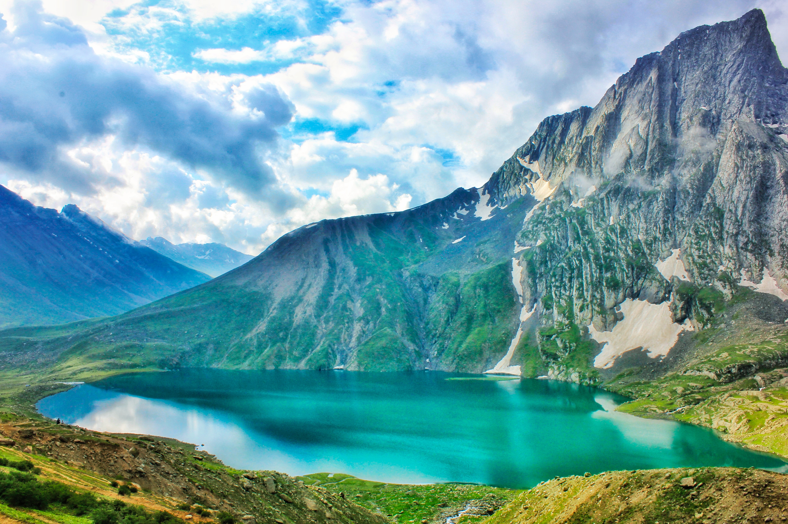
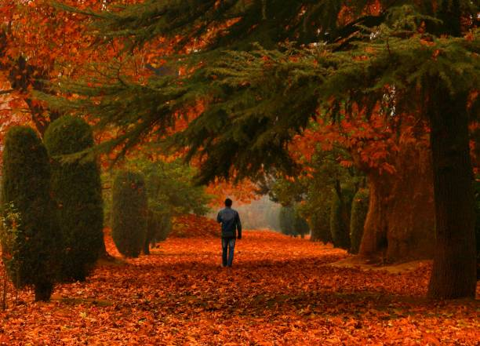
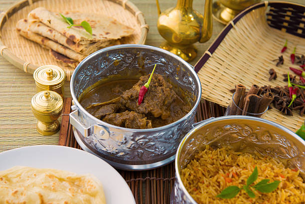
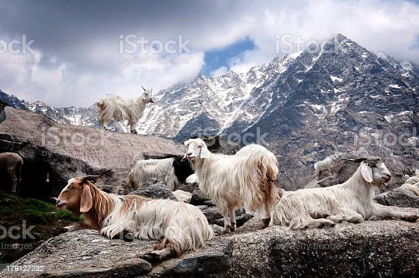
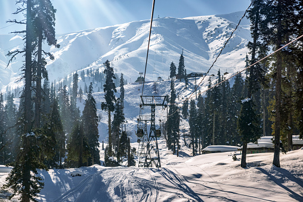

Nature Clips
Reviews
Gallery










Our Founder

Mr. Arsalan Rather
As the monochrome winter gives way to spring, Kashmir’s hills and meadows begin to turn into a riot of colours. The ground thaws and tiny colourful flowers raise their heads among the soft, green grass of the meadows, their stalks swaying merrily in the breeze. Overhead, the sky turns into a shining blue. The snow-peaks etched against the horizon dazzle in their white raiment.The Mughal gardens of Srinagar break out into a profusion of blooms. The countryside is awash with white and pink flowers of almond, peach and cherry blossoms, the air fragrant with their mild scents. The mustard fields join the show with their bright-yellow blooms. Twinkling among the meadows or covering the hill-sides are crocuses, hyacinths, snowdrops, narcissus or daffodils, forsythia, and countless other blooms. The beauty of nature silently echoing the famous saying agar firdaus bar roo-e zameen ast, Hameen ast-o hameen ast-o hameen ast (
if there be paradise on earth, it is this, it is this, it is this). One of the best places to begin your trip is from Srinagar. Easily reached by air and road (and soon by rail), the capital of the newly formed Union Territory, Srinagar is a tourist haven. From staying in houseboats, taking a shikara ride on the lakes, sightseeing, shopping at floating markets or exploring the shops along the boulevard, drinking noon chai to breaking bread at some of the quaint bakeries, you will be spoilt for choice. The Dal Lake, tucked between the Shankaracharya Hill and Hari Parvat (Koh-e-Maran), is largely the hub of all activities. The shore extends a little over 15 kilometres with the boulevard lined with Mughal-era gardens, parks, hotels and restaurant, and shop. It is said that the almond blossoms are the first to herald the arrival of spring. Located about seven kilometres away from Srinagar’s Lal Chowk, Badamwari is one of the best places to see the almond blossoms. Enjoy the pale pink flowers and their fragrance as you stroll through the Badamwari garden in Shahr-e-Khaas. Expect to find local people visiting the area, their picnic hampers filled with tea, bread and other foods. Kashmiris are extremely hospitable people and do not be surprised if you are invited to participate in their feasting. A trip to Charar-e-Sharief (an ancient shrine, about 40 kilometres from Srinagar) will also reward you with sightings of almond blossoms. Yusmarg, further south from here, is also known for spectacular flowering of almond trees. The pear blossoms can be identified by their thick cluster of flowers. Apricot blossom are white in colour, often tinged with a pink or reddish hue, and have a pleasant scent. As you travel through the countryside, especially across Pampore towards the end of the season, the bright yellow of the mustard fields appear in sharp contrast to the more subdued hues of the cherry and peach trees. The Pampore plateau is also known for its wild tulips and poppy. Pampore, about 12 kilometres by road from Srinagar, is popularly known for its saffron production. But if you are here in spring, you will find an abundance of peach trees in bloom, clouds of light pink and purple flowers covering the branches. Spring is also the time when apples, apricot and pear trees too flower. Srinagar, Badgam, Pulwama, Anantnag, Baramulla are known for their apple orchards.